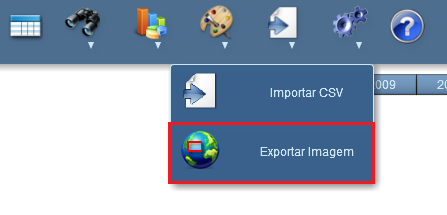
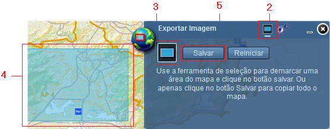
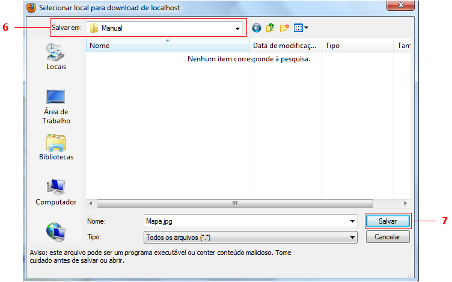

Salvar Imagem
Passos para salvar imagem:
1 - Clicar sobre o símbolo "Exportar Imagem";

2 - Certificar de que a opção "Exportar Imagem" esteja selecionado;
3 - Clicar sobre o símbolo "Selecionar Área do Mapa";
4 - Clicar e arrastar mouse sobre o mapa para definir área de exportação;

5 - Clicar sobre botão "Salvar";
6 - Escolher local a ser salvo;

7 - Clicar sobre botão "Salvar" da caixa de dialogo.
Nota: Para salvar a extensão total do mapa, basta clicar sobre o botão "Salvar" ao abrir o "Exportar Imagem".